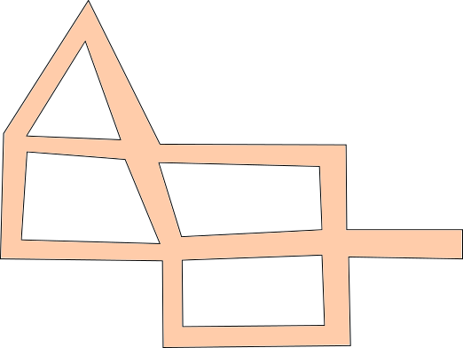
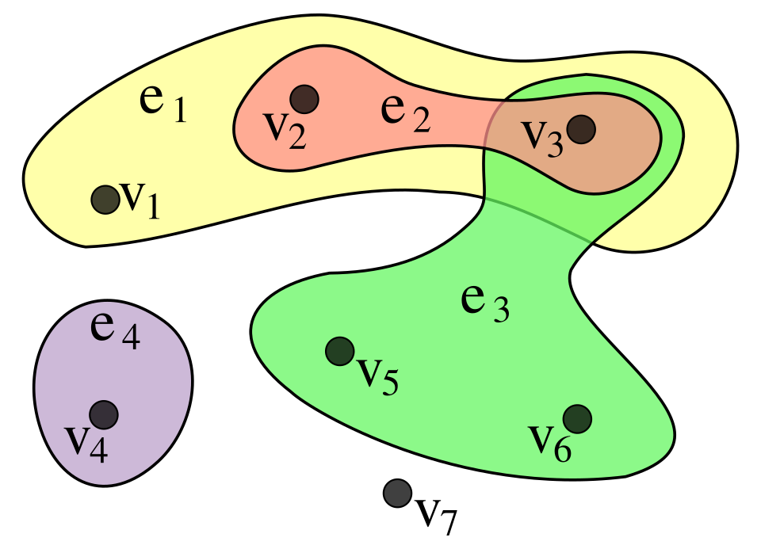
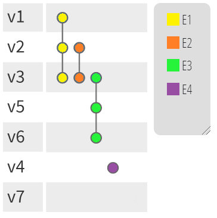

Projeto e Análise de Algoritmos I
Aula 27: Cobertura de Vértices e Emparelhamentos
Universidade Federal do Rio Grande do Sul
Instituto de Informática
Departamento de Informática Teórica
Estes slides utilizam conteúdo adaptado da bibliografia da disciplina e também de notas de aula e slides prévios dos professores Bruno Grisci, Rodrigo Machado, André Grahl Pereira, Lucas Nunes Alegre, Marcus Ritt e Luciana Buriol.
Coberturas de Vértices
Problema das Câmeras
Suponha um museu (ou galeria de arte) onde estão expostos diversos quadros muito valiosos. Para elaborar um sistema de monitoramento adequado, há disponíveis diversas câmeras de vigilância, que podem ser instaladas em entroncamentos de corredores do museu. Por simplicidade, assumimos que cada câmera permite a vigilância (em 360 graus) de todos os corredores a ela associados até o próximo entroncamento.

Pergunta: Qual o menor número de câmeras que precisamos instalar (e onde elas devem estar) para que não haja nenhum corredor do museu descoberto?
Problema das Câmeras: Grafo Associado
Podemos a partir do mapa do museu, gerar um grafo associado:
Mapa do museu
Cobertura de Vértices
Def. Seja G = (V,E) um grafo simples. Uma cobertura de vértices é um subconjunto X \subseteq V tal que, para toda aresta \{x,y\} \in E,
x \in X \quad \text{ou}\quad y \in X.
Ex. Abaixo temos em azul uma cobertura de vértices para o grafo do museu.
Cobertura de Vértices Mínima
Def. Uma cobertura de vértices X de um grafo simples G é mínima sss para toda cobertura de vértices Y de G, |X| \leq |Y|.
Not. Denotamos \textcolor{#2e75b6}{\beta}(G) = |X| a cardinalidade de uma cobertura de vértices mínima X de G.
Exemplo. No caso do museu, temos abaixo (em azul) uma cobertura mínima com 5 nodos (note que há outras coberturas mínimas possíveis).
\quad \textcolor{#2e75b6}{\beta}(G) = 5
Cobertura de Vértices: Algoritmos
- Determinar para um grafo de entrada G uma cobertura mínima é o problema da Cobertura Mínima de Vértices (CMV), em inglês minimum vertex cover (MVC).
- Algoritmo ingênuo (ineficiente): Gerar progressivamente todos os subconjuntos de vértices (ordenados por tamanho) e testar se todas as arestas estão cobertas.
- CMV é um problema conhecidamente NP-difícil, para o qual habitualmente são utilizadas heurísticas.
- Outras disciplinas detalharão algoritmos e heurísticas para esse problema.
Exercício
Determine uma cobertura de vértices mínima e parâmetro \textcolor{#2e75b6}{\beta} do seguinte grafo:
Conjunto Independente
Maior Conjunto Independente
Lembremos que um conjunto independente de um grafo simples G=(V,E) é um subconjunto de vértices X \subseteq V tal que, para quaisquer dois nodos x,y \in X, não há aresta entre eles (\{x,y\} \notin E).
Notação. Denotamos \textcolor{#c40000}{\alpha}(G) o tamanho do conjunto independente máximo (de maior tamanho) de G. Também chamado número de estabilidade de G.
Exemplo. Para o grafo do museu, em vermelho temos um conjunto independente máximo.
\quad \textcolor{#c40000}{\alpha}(G) = 5
P. Dado um grafo simples G, existe alguma relação entre \textcolor{#c40000}{\alpha}(G) e \textcolor{#2e75b6}{\beta}(G)?
Relação entre \textcolor{#c40000}{\alpha}(G) e \textcolor{#2e75b6}{\beta}(G)
Seja G=(V,E) um grafo simples.
Obs. Se X \subseteq V for uma cobertura de vértices, então V-X é um conjunto independente.
Obs. Se Y \subseteq V for um conjunto independente, então V-Y é uma cobertura de vértices.
Lema.
\textcolor{#c40000}{\alpha}(G) + \textcolor{#2e75b6}{\beta}(G) = |V|
Relação entre \textcolor{#c40000}{\alpha}(G) e \textcolor{#2e75b6}{\beta}(G)
Seja \textcolor{#c40000}{S} \subseteq V um conjunto independente de tamanho \textcolor{#c40000}{\alpha}(G).
- \textcolor{#2e75b6}{V - S} tem tamanho |V| - \textcolor{#c40000}{\alpha}(G).
- Considere uma aresta arbitrária \{u,v\} \in E.
- \textcolor{#c40000}{S} é conjunto independente
- \Rightarrow ou u \notin \textcolor{#c40000}{S}, ou v \notin \textcolor{#c40000}{S}, ou ambos.
- \Rightarrow ou u \in \textcolor{#2e75b6}{V - S}, ou v \in \textcolor{#2e75b6}{V - S}, ou ambos.
- Portanto, \textcolor{#2e75b6}{V - S} cobre a aresta \{u,v\}.
Relação entre \textcolor{#c40000}{\alpha}(G) e \textcolor{#2e75b6}{\beta}(G)
Seja \textcolor{#2e75b6}{C} \subseteq V uma cobertura de vértices de tamanho \textcolor{#2e75b6}{\beta}(G).
- \textcolor{#c40000}{V - C} tem tamanho |V| - \textcolor{#2e75b6}{\beta}(G).
- Considere uma aresta arbitrária \{u,v\} \in E.
- \textcolor{#2e75b6}{C} é uma cobertura de vértices
- \Rightarrow ou u \in \textcolor{#2e75b6}{C}, ou v \in \textcolor{#2e75b6}{C}, ou ambos.
- \Rightarrow ou u \notin \textcolor{#c40000}{V - C}, ou v \notin \textcolor{#c40000}{V - C}, ou ambos.
- Portanto, \textcolor{#c40000}{V - C} é conjunto independente.
Relação entre \textcolor{#c40000}{\alpha}(G) e \chi(G)
Seja G=(V,E) um grafo simples.
Obs. Uma coloração de vértices de G corresponde a uma partição dos seus vértices em subconjuntos independentes. O número mínimo de cores necessárias numa coloração de vértices é o número cromático \chi(G).
Lema.
\chi(G) \geq \frac{|V|}{\textcolor{#c40000}{\alpha}(G)}
Prova.
- Um grafo pode ser colorido com \chi(G) cores. Cada uma dessas cores forma um conjunto independente.
- Como o tamanho máximo de qualquer conjunto independente é \textcolor{#c40000}{\alpha}(G), cada uma das \chi(G) pode colorir no máximo \textcolor{#c40000}{\alpha}(G) nodos.
\textcolor{#c40000}{\alpha}(G) e Grafos de Intervalo

Emparelhamentos
Emparelhamentos
Def. Seja G=(V,E) um grafo simples. Um emparelhamento de G é um subconjunto A \subseteq E onde, para todas arestas e_1,e_2 \in A, temos que e_1 e e_2 não são adjacentes (isto é, não possuem nenhum vértice em comum).
Obs. Um emparelhamento também é chamado acoplamento, conjunto independente de arestas ou casamento. Em inglês, usa-se a expressão matching.
Ex. Emparelhamento (em azul) contendo três arestas.
Emparelhamentos Perfeitos
Def. Se um emparelhamento A de G incidir sobre todos os vértices do grafo, dizemos que A é um emparelhamento perfeito.
Obs. Só é possível haver emparelhamentos perfeitos quando |V| for par.
Not. Denotamos \textcolor{#c40000}{\alpha'}(G) o tamanho do emparelhamento máximo (de maior tamanho) do grafo G.
Obs. Note que o maior emparelhamento pode não ser perfeito.
Ex. Emparelhamento perfeito e máximo (em azul):
Emparelhamentos e Conjuntos Independentes
Def. Seja G=(V,E) um grafo simples. Denotamos grafo linha de G o grafo simples L(G)=(V',E') onde
- V' = E
- \{e_1,e_2\} \in E' sss as arestas e_1 e e_2 compartilham exatamente um vértice.
Exemplo:
Lema. Como cada emparelhamento em G é um conjunto independente em L(G), temos \textcolor{#c40000}{\alpha'}(G) = \textcolor{#c40000}{\alpha}(L(G)).
Exercício
Determine um emparelhamento máximo para o seguinte grafo:
P. O emparelhamento encontrado é perfeito?
Algoritmos para Emparelhamentos
Obs. A forma mais comum de encontrar um emparelhamento máximo é começar com um emparelhamento qualquer M e procurar caminhos aumentantes (caminho que permite aumentar o tamanho do emparelhamento atual).
Pelo lema de Berge, M é máximo sss não existe caminho aumentante em relação a M.
| Caso | Ideia/algoritmo | Complexidade |
|---|---|---|
| Grafo bipartido, sem pesos | Redução para fluxo máximo; caminhos aumentantes um a um | O(\lvert V\rvert\lvert E\rvert) |
| Grafo bipartido, sem pesos | Hopcroft–Karp: encontra vários caminhos aumentantes por fase | O(\sqrt{\lvert V\rvert}\,\lvert E\rvert) |
| Grafo geral, sem pesos | Edmonds: algoritmo dos blossoms, contraindo ciclos ímpares | O(\lvert V\rvert^2\lvert E\rvert) |
| Grafo geral, sem pesos | Micali–Vazirani: versão mais eficiente, porém mais complexa | O(\sqrt{\lvert V\rvert}\,\lvert E\rvert) |
Obs. Encontrar um emparelhamento maximal é mais simples: um algoritmo guloso basta. Porém, maximal não significa máximo; em geral é apenas uma 2-aproximação para o tamanho ótimo.
Grafos e Intratabilidade
Grafos e Intratabilidade
Obs. Alguns problemas em grafos possuem algoritmos eficientes, como busca em largura, busca em profundidade, caminhos mínimos, árvores geradoras mínimas e emparelhamentos em vários casos.
- Mas muitos problemas naturais em grafos parecem ser muito mais difíceis.
- Exemplo: em vez de perguntar apenas se dois vértices estão conectados, podemos perguntar:
Existe um ciclo simples que visita todos os vértices exatamente uma vez?
- Esse é o problema do ciclo Hamiltoniano, um exemplo clássico de problema difícil em grafos.
Classe NP-completo
- Informalmente, um problema está em NP quando, se alguém nos entregar uma solução candidata, conseguimos verificar rapidamente se ela está correta.
Um problema é NP-completo quando:
- está em NP;
- é tão difícil quanto qualquer outro problema em NP.
- Ou seja, se descobríssemos um algoritmo eficiente (polinomial) para um problema NP-completo, então todos os problemas em NP teriam algoritmos eficientes.
- Até hoje, não se sabe se isso é possível. Essa é a famosa pergunta:
P = NP\text{?}
Por Que NP-completo é Importante?
- Problemas NP-completos aparecem naturalmente em otimização, planejamento, escalonamento, redes, bioinformática, inteligência artificial e teoria dos grafos.
- Na prática, saber que um problema é NP-completo sugere que talvez não exista um algoritmo eficiente para resolvê-lo exatamente em todos os casos.
Por isso, costuma-se usar:
- algoritmos aproximados;
- heurísticas;
- algoritmos exponenciais otimizados;
- restrições do problema que sejam mais fáceis.
- Existem ainda classes de problemas possivelmente mais difíceis, como PSPACE-completo e EXPTIME-completo, estudadas em disciplinas de teoria da computação e complexidade.
Problemas NP-completos em Grafos
Obs. Vários problemas clássicos de grafos são NP-completos quando escritos como problemas de decisão.
- Clique: existe um conjunto de k vértices todos conectados entre si?
- Conjunto independente: existe um conjunto de k vértices sem arestas entre eles?
- Cobertura por vértices: existe um conjunto de k vértices que toca todas as arestas?
- Coloração: é possível colorir os vértices com k cores sem conflito?
- Caminho/Ciclo Hamiltoniano: existe um caminho/ciclo que passa por todos os vértices uma vez?
- Conjunto dominante: existe um conjunto de k vértices que domina todo o grafo?
Reduções: Traduzindo Problemas Difíceis
Obs. Uma redução polinomial é uma forma eficiente de transformar instâncias de um problema em instâncias de outro.
- Como todos os problemas NP-completos são, em certo sentido, igualmente difíceis, eles podem ser traduzidos uns nos outros por reduções polinomiais.
Exemplo intuitivo:
resolver CLIQUE eficientemente \Rightarrow resolver outros problemas NP-completos eficientemente
Assim, NP-completude é uma linguagem comum para explicar por que muitos problemas diferentes parecem compartilhar a mesma barreira de dificuldade.
Além de Grafos
Hipergrafos
- Um hipergrafo é uma generalização de um grafo.
- Em um grafo comum, cada aresta conecta exatamente dois vértices.
- Em um hipergrafo, uma hiperaresta pode conectar qualquer quantidade de vértices.
- Formalmente, um hipergrafo não direcionado pode ser escrito como H = (V,E), onde V é o conjunto de vértices e cada hiperaresta e \in E é um subconjunto de V:
e \subseteq V.
Assim, grafos comuns são um caso particular de hipergrafos em que toda aresta tem tamanho 2.
Exemplos de Hipergrafos


Saiba mais: https://en.wikipedia.org/wiki/Hypergraph
?